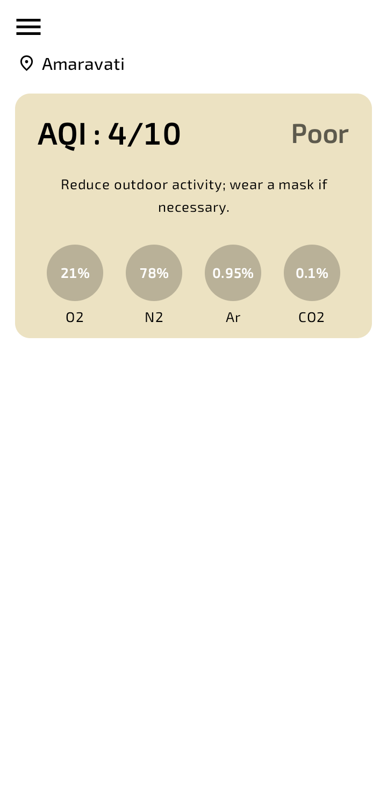

Welcome to Airolyn
Airolyn is an advanced air quality monitoring mobile app designed to keep you and your loved ones safe.
Get real-time AQI updates, intuitive dashboards, and customizable notifications so you can always breathe easy.
Get real-time AQI updates, intuitive dashboards, and customizable notifications so you can always breathe easy.

Everything You Need
Visual AQI Map
See a color-coded AQI overview for each city so you can plan safe outings at a glance.
Advice for Sensitive Groups
Special tips to help children, seniors, and asthma patients protect their lungs on poor air days.
Weather Sync
Instantly view temperature and weather along with air quality in one place.
Personalized Alerts
Choose when and how to get alerts, or mute the app during sleep and travel.
Quick Location Switch
Find AQI for new cities in seconds and save favorites for fast updates again.
Offline Data
View your last AQI reading and air tips even when the internet drops out.